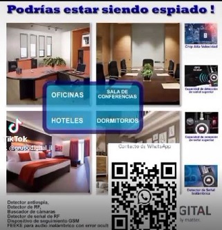
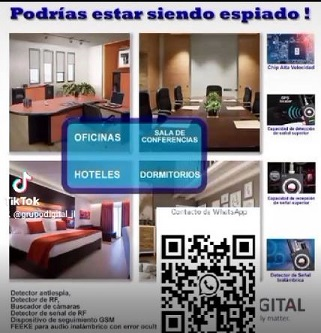

La biometría es cada vez más utilizada como una capa avanzada en muchos sistemas de seguridad personales y empresariales.
La biometría hace referencia a la identificación y autenticación de personas a partir de características físicas o conductuales únicas, como huellas dactilares, reconocimiento facial, iris o voz.
En una era en la que la seguridad digital es más crucial que nunca, la seguridad biométrica surge como un faro de esperanza e innovación.
0/200 caracteres
Contenido de landing dividido en secciones con scroll suave.


 



Comentarios Recientes